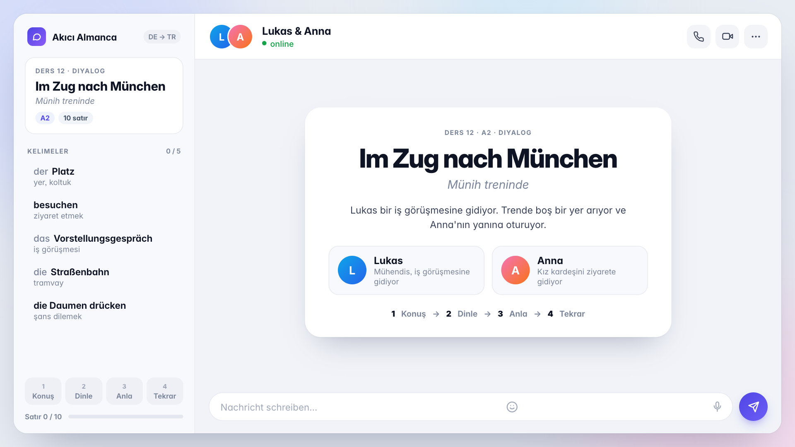
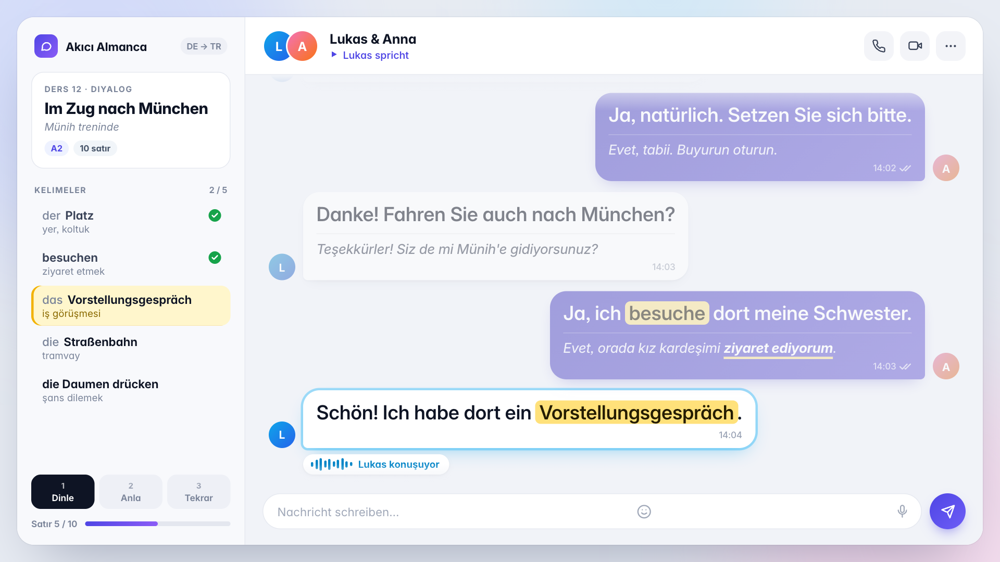
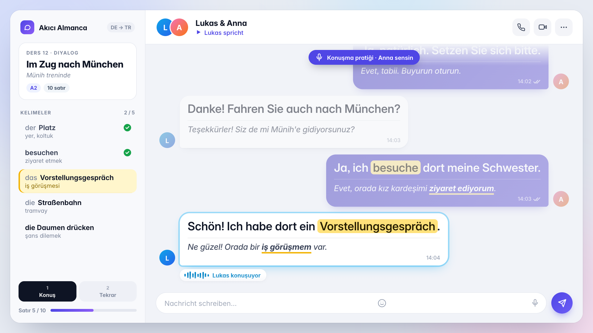
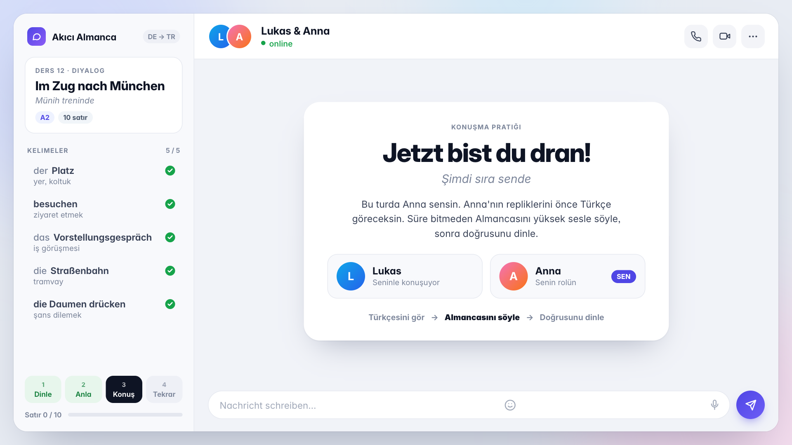
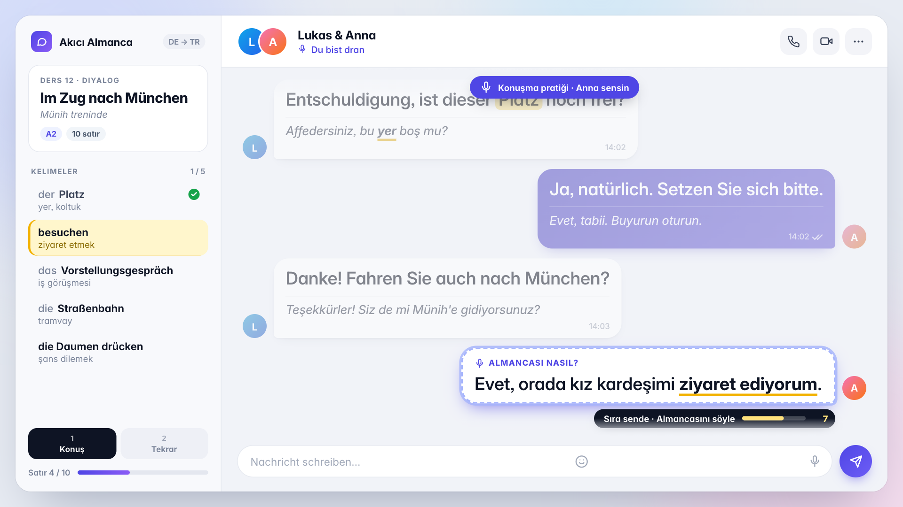
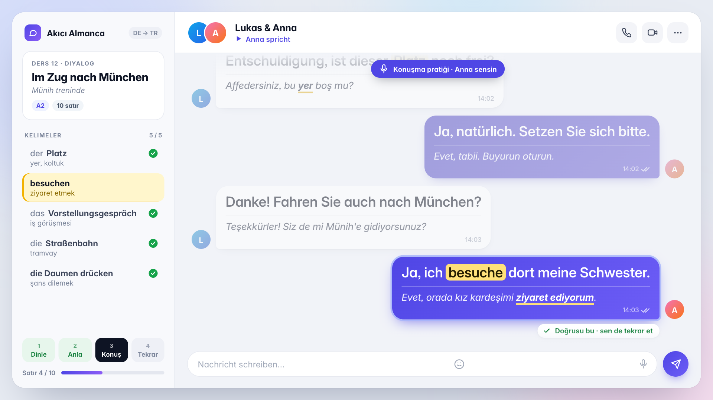
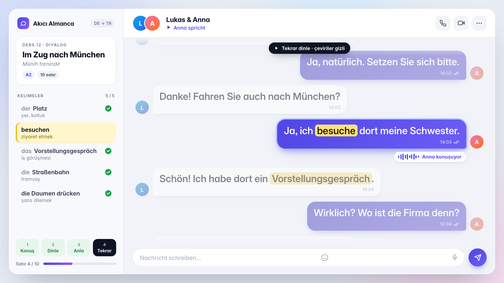

Münih treninde. İlk chat dersi videosu
Dört bölüm: her mesaj önce yalnız Almanca, sonra Türkçe çevirisiyle okunur. Konuşma pratiğinde öğrenci Anna olur: Türkçesini görür, süre bitmeden Almancasını söyler, sonra doğrusunu dinler. Sonda diyalog çevirisiz tekrar dinletilir.







Sarı kelimeler dersin beş hedef kelimesi. Videoda soldaki listede o an geçen kelime yanar.